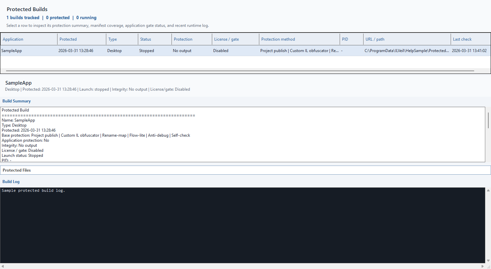
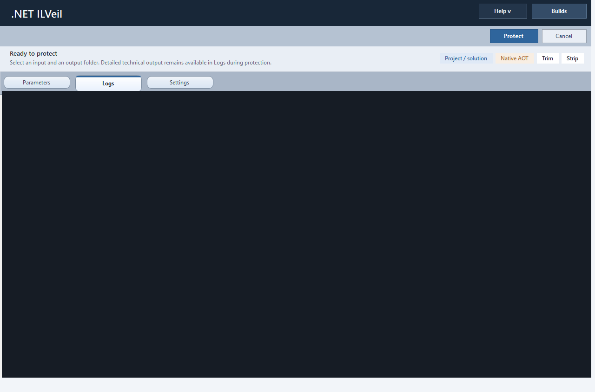

Compatibility-aware obfuscation, string protection, rename-map output, and preservation controls.
Desktop .NET Protection Workflow
Ship protected .NET releases from a desktop workflow that still feels operationally sane.
ILVeil is a Windows desktop application for managed assembly protection, Native AOT publishing, activation management, and stack-trace deobfuscation support. It is designed for teams that want stronger release hardening without moving their operators into a CLI-only flow.
Managed assemblies
Native AOT
Activation and editions
Rename-map support
Capabilities
Focused on the release stage, not just on a raw obfuscation step.
ILVeil is positioned as a desktop .NET obfuscator and .NET protection product, but the value is broader than a single transform. It combines protection, publish flow, activation, and supportability into one operator-facing workflow.
Managed Assembly Protection
Protect compiled .NET assemblies with a custom IL layer, safe rename behavior, rename-map output, and preservation rules that reduce compatibility fallout.
Native AOT Publishing
Coordinate release builds with Native AOT, trim, and strip options from the same desktop application used for managed protection workflows.
Activation Management
Use the built-in activation and edition UX for Free, Pro, and commercial licensing flows without sending users through ad hoc scripts.
Protected Builds View
Track protected application outputs, registry state, launch targets, and support-relevant metadata inside a dedicated builds surface.
Support-Friendly Outputs
Keep operational diagnostics viable with stack-trace deobfuscation support and rename-map awareness for production issue handling.
Desktop-first Workflow
Built for operators and developers who want a GUI-driven release process instead of pushing every protection decision into terminal tooling.
Workflow
Designed around a practical release sequence.
Select the target
Choose a project, solution, DLL, EXE, or frontend build and keep the release context visible in one UI.
Apply protection policy
Set managed protection options, preservation controls, Native AOT targets, and packaging decisions.
Publish and validate
Run the build pipeline, inspect logs, and keep post-protection visibility through build records and audits.
Ship with supportability
Use activation, edition rules, and stack-trace deobfuscation support as part of the production handoff.
Interface
Product views from the desktop application.



Editions
Clear public positioning for Free and commercial usage.
Free
Good for evaluation and smaller protected outputs
Includes the desktop UI, managed protection workflow, Native AOT path, and baseline release operations.
- Desktop protection workflow
- Managed protection baseline
- Native AOT publish support
- Up to 3 logical user-managed assemblies per run
Pro
Commercial desktop usage with fewer operational limits
For normal paid usage, Pro removes the Free assembly cap and fits teams shipping protected releases commercially.
- Signed product-license flow
- Commercial release usage
- No Free managed assembly cap
- Evaluation and licensing by request
Enterprise
Reserved for organization-level onboarding
Use this path for larger teams that need direct licensing discussion, rollout planning, or broader commercial terms.
- Team and organization discussions
- Commercial onboarding
- Direct contact workflow
- Handled through support email
Download
Portable release package for Windows x64
The public repository contains only release binaries, checksums, screenshots, and public documentation. The private source code repository is not exposed here.
FAQ
Common questions about the public distribution model.
Is the source code public?
No. This public repository is only the release and product site. The source repository remains private.
Is this a CLI package?
No. ILVeil is positioned here as a Windows desktop GUI application. Public distribution is via GitHub Releases and GitHub Pages.
Can GitHub Pages host a corporate-looking landing page?
Yes. GitHub Pages can serve a polished static product site. The limitation is backend logic, not branding or layout quality.
Licensing
Pro licensing and evaluation requests
For commercial Pro licensing or evaluation requests, contact dengwebdev@gmail.com.